CAPA
![Imagem: Capa. Na parte inferior à direita, o título "RELATÓRIO DE ATIVIDADES 2024". No canto superior esquerdo, o logotipo da Fundação Dorina Nowill para Cégos, composto por um hemôji amarelo, com um largo sorriso, e óculos pretos e redondos; seguido pelo nome. Ao centro, fotomontagem com fotografias de pessoas e objetos: um homem idoso careca, usa camisa xadrez, segura uma bengala longa e sorri; um menino com cabelos curtos sentado em uma pilha de livros, ele usa óculos escuros, blusa e bermuda estampadas e segura um livro aberto próximo ao rosto; uma menina de cabêelos longos e loiros usa boné, óculos e camiseta; um livro aberto com escrita braile nas páginas; e uma mulher com cabelos escuros presos em um coque, usa vestido estampado e sapatos, segura uma bengala longa na mão. Fim da imagem.](../resources/images/image_Image12674.png)
1
Página sem conteúdo.
2
Sumário
Institucional
Página 05
Serviços de Apoio à Inclusão
Página 15
Soluções em Acessibilidade
Página 27
3
Áreas Administrativas
Página 33
Indicadores Financeiros
Página 55
Conselho e Gestão
Página 67

LEGENDA: Foto: Dorina de Gouvêa Nowill, fundadora. FIM DA LEGENDA.
4

LEGENDA: Ilustração: colagem com duas fotos de Dorina Nowill e uma máquina de escrever em braille. FIM DA LEGENDA.
5
1. Institucional
6
Introdução
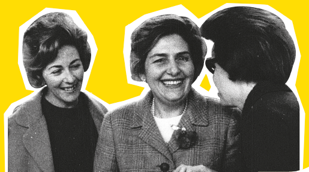
LEGENDA: Foto: Dorina Nowill e duas mulheres. FIM DA LEGENDA.
Citação: “Distribuir um acolhimento único e especial, como sempre foi.” Fim da citação.
É um desafio equilibrar os valores que acompanham a Fundação Dorina Nowill para Cegos em seus mais de 70 anos com as exigências de um mundo cada vez mais globalizado e tecnológico. Mas a instituição segue superando obstáculos, atingindo novas metas e aumentando seu alcance na missão de promover a autonomia e a acessibilidade para pessoas cegas e com baixa visão.
Toda a experiência e o conhecimento de sete décadas de atuação constante no atendimento de pessoas com deficiência vem sendo compartilhada com outras instituições em diversas cidades do Brasil. Mesmo expandindo suas fronteiras e aumentando a presença até fora do país, o cuidado com os clientes segue o mesmo. Cada pessoa que chega no prédio da Fundação continua recebendo um acolhimento único e especial, como sempre foi.
É assim, prezando pela excelência, que a Fundação não só mantém seu trabalho, como cresce cada vez mais. Nas páginas deste relatório, você saberá mais sobre todas as novidades e conquistas de 2024. Mais do que prestar contas, essa é uma forma de agradecer a todos que contribuíram para que tudo isso fosse possível.
7
Perfil da Organização
Promover a autonomia e a independência de pessoas cegas e com baixa visão e, ao mesmo tempo, conscientizar a sociedade sobre inclusão e acessibilidade são os objetivos da Fundação Dorina Nowill para Cegos.
O nome da instituição vem de sua fundadora, que perdeu a visão aos 17 anos, mas jamais desistiu de estudar e ler. Mas, na época, ela encontrou muitas barreiras e começou sua luta para ter mais livros em Braille no Brasil. Assim, em 1946, começou a Fundação para o Livro do Cego no Brasil, com a missão de produzir livros em Braille – atividade que, 78 anos depois, segue sendo realizada na Fundação.
Mas Dona Dorina levou seu sonho muito além, e outras missões foram surgindo em sua trajetória, sempre com foco na reabilitação das pessoas cegas e com baixa visão. Ao longo desses anos, a Fundação se modernizou, inovou e evoluiu em diversas áreas na proteção desse público, tanto nas soluções das áreas editorial, gráfica e audiovisual, como nos serviços de apoio à reabilitação.
Reconhecida no Brasil e no mundo pelo trabalho que realiza com excelência, a Fundação Dorina completa mais um ano de muito trabalho e ações transformadoras, não só para pessoas com deficiência, mas também para cada um de nós.
![Imagem: Fotografia. Duas mulheres caminham na calçada, à frente de um prédio amarelo com o número "558" em preto na parte superior direita da fachada e o logotipo da FUNDAÇÃO DORINA NOWILL PARA CÉGOS. A mulher à esquerda possui cabelos pretos compridos, usa blusa azul, calça branca e tênis brancos, carrega uma mochila nas costas e segura uma bengala longa na mão. Ela está de braço dado com a mulher à direita. A mulher à direita possui cabelos longos castanhos compridos, usa óculos escuros, blusa cinza, calça preta e sapatilhas béges. Fim da imagem.](../resources/images/image_Image12713.png)
LEGENDA: Foto: fachada da Fundação Dorina Nowill para Cegos. FIM DA LEGENDA.
8
Propósito, Valores & Visão
Nosso PROPÓSITO
Promover a inclusão e a acessibilidade para pessoas cegas e com baixa visão, para juntos transformarmos vidas e a sociedade.
Nossos VALORES
• Ética é inegociável.
• Transparência no que fazemos e como fazemos.
• Respeito é tão bom que não dispensamos.
• Diversidade é um fato; inclusão é nossa escolha.
• Perseverança em tudo que fazemos — e, por isso, não desistimos.
• Compromisso com nosso propósito.
• Inovação para construir o futuro, valorizando o nosso legado.

Nossa VISÃO
Ser reconhecida mundialmente como referência em protagonismo inclusivo, expandindo, inovando e multiplicando ações de impacto para todas as gerações.
9
Números da Deficiência no Brasil e no mundo
São mais de 253 milhões de pessoas com deficiência visual no mundo.
Entre elas, 36 milhões de pessoas são cegas e 217 milhões tem perda severa de visão, de acordo com a Organização Mundial da Saúde (OMS).
Segundo a OMS, se houvesse um número maior de ações efetivas de prevenção e/ou tratamento, entre 60% e 80% dos casos de cegueira poderiam ser evitados.
LEGENDA: Ilustração: desenho cartunesco do globo terrestre com uma bengala para pessoa com deficiência visual e óculos escuros. FIM DA LEGENDA.
Boxe complementar:
No Brasil, dados do IBGE mostram que há 6,5 milhões de pessoas com deficiência visual, sendo
528 mil pessoas cegas
6 milhões com dificuldade severa de enxergar (baixa visão)
Fim do complemento.
10
Palavra do Presidente
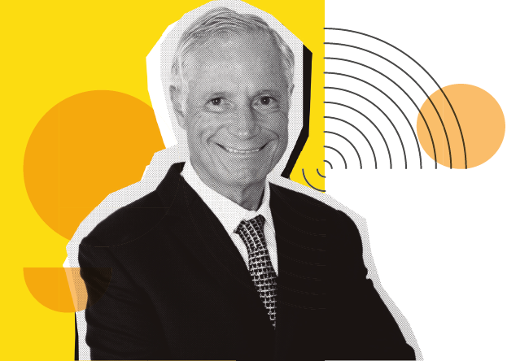
LEGENDA: Foto: Francisco H. Della Manna, Presidente do Conselho de Curadores (2019 – 2024). FIM DA LEGENDA.
Francisco H. Della Manna
Presidente
O ano de 2024 ficará marcado na minha vida, não só por ser o último como presidente da Fundação Dorina, mas também por tudo o que conquistamos nesses 365 dias. Mesmo conhecendo a instituição e todo nosso potencial, sempre me impressiono quando paro para pensar nas nossas realizações e no quanto conseguimos avançar ano a ano.
Para começar, em 2024, tivemos diversas ações relacionadas com as Paralimpíadas. Pude acompanhar nossos atletas em Paris e também presenciar o incrível trabalho do fotógrafo e conselheiro da Fundação Dorina, João Maia. Mesmo tendo perdido a visão há cerca de 20 anos, ele mostra como é possível ir muito além das expectativas. João Maia simboliza muito do que buscamos desenvolver, todos os dias, com nossos clientes.

LEGENDA: Foto: Torre Eiffel decorada com os anéis olímpicos. FIM DA LEGENDA.
11
Citação: “Mesmo conhecendo a instituição e todo nosso potencial, sempre me impressiono quando paro para pensar nas nossas realizações e no quanto conseguimos avançar ano a ano.” Fim da citação.
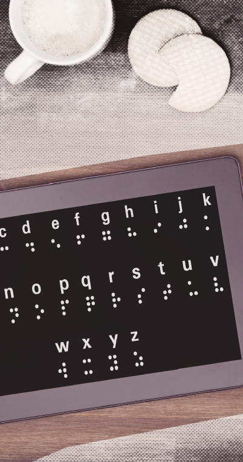
LEGENDA: Foto: Tela do tablet mostrando letras em braile. FIM DA LEGENDA.
Também seguimos expandindo as fronteiras da Fundação Dorina. Outra ação marcante do ano foi o edital que realizamos para contribuir com as instituições do Rio Grande do Sul que atendem pessoas cegas e com baixa visão e que perderam tudo por causa das gravíssimas enchentes que atingiram o estado. Finalizamos o edital no fim de 2024, com a seleção das organizações gaúchas que serão atendidas e, em 2025, entraremos em ação para ajudá-las a retomarem seus trabalhos.
Internamente, investimos ainda mais para oferecer o melhor aos nossos clientes. Um exemplo disso foi a compra de 50 unidades de Linhas Braille, equipamento que permite a leitura em Braille da tela de tablets, computadores e celulares. Outro marco importante é a reforma da nossa sede, que promoverá o aumento do número de pessoas atendidas.
Cumpri dois mandatos de quatro anos, com toda a dedicação. Foi um período de muito trabalho, mas também de muito orgulho por ter ocupado a presidência dessa instituição tão relevante para a defesa da acessibilidade das pessoas cegas. Desejo muito sucesso ao novo presidente, Eduardo de Oliveira, e sigo à disposição para fazer o que estiver ao meu alcance para contribuir com a Fundação.
12
Palavra do Superintendente
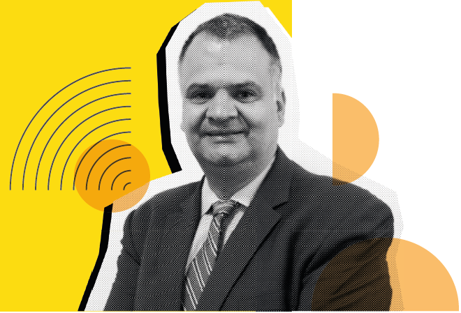
LEGENDA: Foto: Alexandre Munck, Superintendente. FIM DA LEGENDA.
Alexandre Munck
Superintendente
Inspirados pelo ano paralímpico, a Fundação Dorina marcou muitos gols em 2024. Mês a mês, nossa equipe atuou com coesão e empenho, em busca de cada objetivo.
No esporte e na vida, ter bons parceiros é parte importante da vitória. Por isso, em 2024, contamos com a parceria de duas instituições: a Naurú, de Atletismo, e o CADEVI, de Goalball, para trazer a prática esportiva pela primeira vez para a Fundação. Outra novidade foi o Takkyu Volley, modalidade que já até rendeu a participação dos nossos atletas em uma competição.
Também foram feitas parcerias de sucesso na área de reabilitação. Compartilhamos nossos recursos e nosso conhecimento com o Instituto Sul-Mato-Grossense para Cegos Florivaldo Vargas (ISMAC) e com a Associação Catarinense para Integração do Cego (ACIC), com o objetivo de expandir nossa experiência para outros estados do Brasil.
Planejar é outra etapa importante para conquistar objetivos. Dentro do nosso planejamento estratégico, investimos na estrutura da Fundação, ampliando nosso espaço com a aquisição de um novo prédio. A meta é que, até 2026, o número de pessoas atendidas aumente em 50%.
13
Em 2024, já iniciamos uma reforma na Sede, com a criação de um novo auditório e a expansão da biblioteca física, que, em breve, estará pronta para atender o público.
A Fundação também marcou presença em diversos eventos para trocar informações e experiências. Estivemos no BETT Educar, na Bienal do Livro, no Web Summit, além de sediarmos a Reunião do Consórcio Internacional dos Livros Digitais Daisy, que aconteceu em São Paulo depois de quase 12 anos, com a participação de mais de 10 países. A Fundação também marcou presença no G20 Social, como parte do D20, dedicado às questões relacionadas às pessoas com deficiência. Durante o evento, foram estabelecidas diversas propostas, entre elas a criação de um plano global para abordar o combate à fome e à pobreza e promover a segurança alimentar para a população com deficiência.
Citação: “Planejar é outra etapa importante para conquistar objetivos. Dentro do nosso planejamento estratégico, investimos na estrutura da Fundação.” Fim da citação.
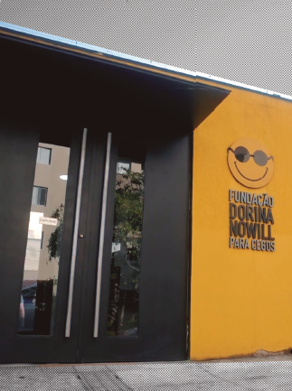
LEGENDA: Foto: fachada da sede da Fundação Dorina Nowill para Cegos. FIM DA LEGENDA.
Também recebemos representantes da Fundação LEGO, da Dinamarca, que conheceram nosso trabalho e viram o projeto LEGO Braille Bricks acontecendo na prática em escolas brasileiras.
Promovemos a maior campanha de nossa história no Abril Marrom, mês de conscientização sobre a cegueira, buscando informar as pessoas sobre a importância da prevenção e, também, mostrar que a Fundação está sempre de portas abertas para quem precisar do nosso atendimento.
Encerramos a temporada 2024 com recordes! Alcançamos o maior número de clientes atendidos na nossa história e muitos outros números impressionantes, que você vai conferir neste relatório.
Esperamos que você continue na nossa torcida pelos próximos anos, para que, juntos, possamos superar os obstáculos e conquistar ainda mais vitórias!
14
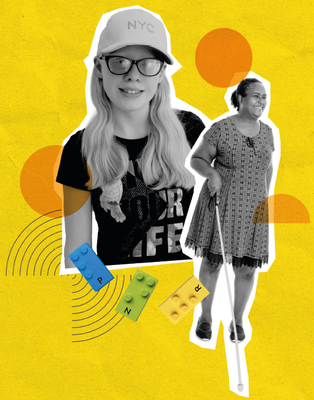
LEGENDA: Ilustração: colagem com uma foto da cliente Alice Alencar, uma da cliente Fernanda Santos e algumas peças de LEGO® Braille Bricks. FIM DA LEGENDA.
15
2. Serviços de Apoio à Inclusão
16
Habilitação/Reabilitação
É na reabilitação que acontece o primeiro contato das pessoas cegas ou com baixa visão com a Fundação Dorina. E também é no atendimento que a vida dessas pessoas e de suas famílias começa a se transformar. Em 2024, mais uma vez, um recorde foi batido, com os atendimentos ultrapassando os 50 mil.
Também foi o primeiro ano que o número de crianças foi maior do que o de jovens, resultado de um trabalho intenso de busca ativa. Essa ação faz muita diferença para as crianças cegas ou com baixa visão, já que, o quanto antes a deficiência for identificada, maiores serão os benefícios da habilitação para a criança e para a família.
![Imagem: Fotografia. Pessoas em uma praia. Ao centro, uma menina com cabelos pretos presos em um rabo de cavalo, usa óculos e maiô rosa. Ela está em uma cadeira de rodas adaptada, composta por três rodas e um suporte horizontal para as pernas. Atrás, segurando a cadeira, um homem com cabelos castanhos curtos e barba, usa óculos de sol e blusa térmica rosa e azul. À direita, outro homem com cabelos castanhos curtos e barba, usa blusa térmica rosa e azul e bermuda cinza. À esquerda, uma mulher com cabelos pretos presos em um rabo de cavalo, usa óculos escuros, camiseta branca com o logotipo da Fundação Dorina Nowill, légguing preta e tênis azuis. Ao lado dela, duas mulheres e uma criança. Fim da imagem.](../resources/images/image_Image12801.png)
LEGENDA: Foto: clientes em equipamentos adaptados durante visita à praia de Santos. FIM DA LEGENDA.
Por essa mudança no perfil dos clientes, novas oficinas foram oferecidas na Fundação, como arte, coral, teatro e Braille para os familiares. Além disso, a equipe continuou com a programação de atividades externas, que começaram em 2023 e se intensificaram em 2024, quando, pela primeira vez, a Fundação levou um grupo de crianças para a praia da Ponta da Praia, em Santos.
O passeio contou com o apoio da ONG Praia Acessível, que oferece caiaques, bicicletas e outros equipamentos adaptados para pessoas com deficiência. Assim, eles puderam fazer diversas atividades na praia, como surfe, mergulho, corrida, caminhada, entre outras.
![Imagem: Fotografia. À esquerda, uma mulher com cabelos loiros presos em um rabo de cavalo, usa boné cinza, camiseta vermelha, calça cinza e bótas pretas. Ela está com as costas inclinadas para baixo, com as mãos apoiadas uma no ombro e outra na mão de um menino. O menino usa óculos, capacete dourado e preto de bombeiro e uniforme de bombeiro, compôosto por um casaco cinza com faixas refletivas. O uniforme fica grande no menino. Ao fundo, parte de um caminhão vermelho de bombeiros estacionado em piso de blocos cinza. Fim da imagem.](../resources/images/image_Image12809.png)
LEGENDA: Foto: visita do cliente Luis Felipe ao batalhão dos bombeiros. FIM DA LEGENDA.
17
Muito mais do que um simples passeio, essas saídas oferecem a possibilidade de os clientes aplicarem os conceitos de autonomia e mobilidade na prática, além de ser um campo de observação para os profissionais da Fundação.
Falando em equipe, duas ações foram importantes para a melhoria dos números e dos resultados da área: a redução da rotatividade de técnicos em relação ao ano anterior, em 29%, por meio da contratação de jovens talentos, engajando-os na causa; e a gestão participativa, que incentiva a equipe a trazer ideias e novas possibilidades para a habilitação e reabilitação.
![Imagem: Fotografia. Pessoas sentadas ao redor de uma mesa de tênis de mesa. Ao centro, um homem com cabelos castanhos curtos, usa camisa polo rosa com listras brancas e segura uma raquéte adaptada, composta por um suporte preto retangular na horizontal. Próximo à raquéte adaptada, a bolinha de tênis de mesa. À direita, uma mulher com cabelos longos e ruivos, usa blusa preta e segura a raquéte adaptada. À esquerda, dois homens: um possui cabelos grisalhos curtos e está sentado na lateral da mesa de tênis; o outro usa boné preto e está sentado na lateral da mesa na divisão da redinha. Ao fundo, uma menina com os olhos fechados e um homem segurando as mãos dela, eles estão sentados em cadeiras; atrás, brinquedos de parque infantil. Fim da imagem.](../resources/images/image_Image12816.png)
LEGENDA: Foto: clientes praticando a modalidade esportiva Takkyu Volley. FIM DA LEGENDA.
Outra novidade da área foi a chegada do Takkyu Volley, primeiro esporte praticado dentro da Fundação. A modalidade, que integra regras do vôlei e do tênis de mesa, desenvolve a inclusão, pois pode ser jogada por pessoas de diferentes gerações, com ou sem deficiência, além de desenvolver diversas habilidades.
A área de Habilitação e Reabilitação ainda levou sua expertise para outras instituições brasileiras, contribuindo para ampliar o atendimento para pessoas cegas e com baixa visão, sendo a Associação Catarinense para Integração do Cego (ACIC) e o Instituto Sul-Mato-Grossense para Cegos Florivaldo Vargas (ISMAC).
Boxe complementar:
Números do Atendimento
1.791 CLIENTES
1.552 FAMILIARES
50.612 ATENDIMENTOS
Fim do complemento.
18
Cursos
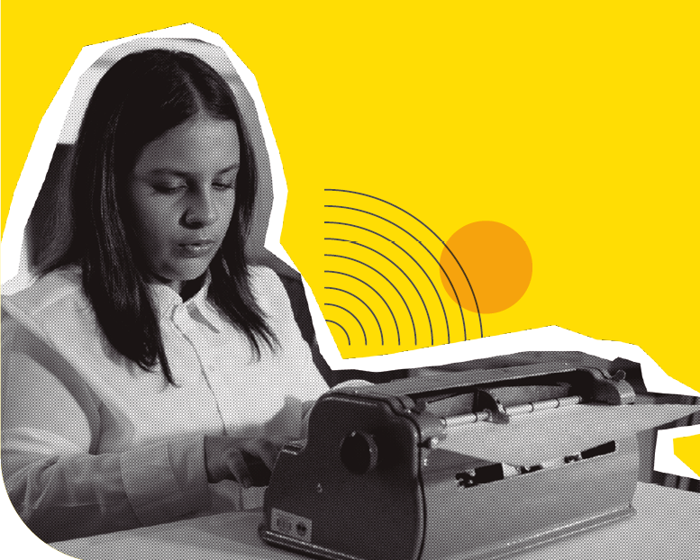
LEGENDA: Foto: Cliente Mariah Rachid escrevendo em máquina Braille. FIM DA LEGENDA.
Novos cursos foram oferecidos aos clientes da Fundação em 2024, o que ampliou as opções de formação. Durante o ano, 319 alunos foram qualificados nos cursos de: Arte Parte Todos os Sentidos, atendimento ao cliente, coral, empreendedorismo na era digital, informática, inglês, marketing digital, massoterapia básica e intermediária, meditação, musicografia braille, musicoterapia, teatro e técnicas administrativas.
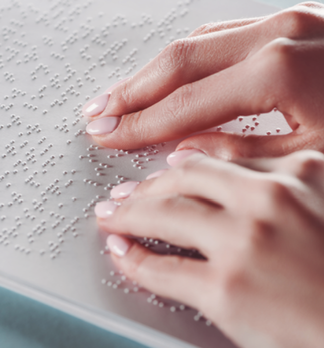
LEGENDA: Foto: detalhe de uma mão de pessoa lendo em Braille. FIM DA LEGENDA.
Uma novidade foi o oferecimento às famílias dos clientes de duas oficinas: Braille e Transcrição Básica, colaborando ainda mais para a inclusão dos familiares de pessoas com deficiência.
19
Central de Formações
LEGENDA: Foto: composição de uma lâmpada com capelo ao lado de um diploma. FIM DA LEGENDA.
Uma das grandes ações realizadas em 2024 foi a mudança da plataforma de vendas da Central de Formações, que ganhou novo layout e a ampliação da oferta de cursos.
No ano, foram formadas duas turmas no curso de Introdução à Audiodescrição. Também foram lançados dois novos cursos em 2024: Introdução à Editoração Braille e Produção de Audiolivros, ambos focados na produção de livros acessíveis. Além disso, foi colocado em prática o curso de Capacitação em Orientação e Mobilidade (1ª turma), com duração de 4 meses, e, por meio de uma parceria, a Fundação realizou um curso presencial de Narração de Audiolivro (1ª turma).

LEGENDA: Foto: educadora auxiliando cliente em atividade com peças de LEGO® Braille Bricks. FIM DA LEGENDA.
Por fim, uma grande conquista: o curso de Formação de Educadores para o uso do LEGO® Braille Bricks foi incluído na plataforma da Fundação.
Ao todo, 654 alunos se inscreveram nos cursos oferecidos pela Central de Formações, um grande ganho para a expansão da acessibilidade e da inclusão.
20
Serviços de Educação e Cultura
BIBLIOTECA & DORINATECA
Além de uma biblioteca física, a Fundação mantém a Dorinateca, plataforma virtual que reúne pessoas que gostam de ler e buscam livros acessíveis. Em 2024, a biblioteca aumentou não só o número de leitores cadastrados, mas também o engajamento e participação de produtores de livros, tornando-se um centro importante de acesso ao livro para as pessoas cegas e com baixa visão.
LEGENDA: Foto: notebook com página do site Dorinateca exibindo os títulos disponíveis. FIM DA LEGENDA.
Veja como foi o ano em números:
1.531 leitores cadastrados
2.427 downloads

1.020 empréstimos para todo o Brasil

5.735 obras no acervo
284 pessoas atendidas
21
REDE DE LEITURA INCLUSIVA
A Rede de Leitura Inclusiva cuida da articulação com instituições de educação e leitura pelo Brasil, faz a distribuição de livros acessíveis, além de promover diálogos sobre como implementar a acessibilidade nos espaços. Em 2024, participou de programações de livro, leitura e acessibilidade em quatro regiões do Brasil. Houve maior foco em ações na cidade de São Paulo, por meio de parcerias com CEUs, Fábricas de Cultura, escolas e bibliotecas públicas.
A equipe também promoveu a Semana da Leitura, com uma intensa programação, incluindo encontro com o autor, sarau, troca de livros, conversa com os leitores e o encontro Vozes de Dorina, que trouxe pessoas que conviveram com a fundadora para contarem histórias.
![Imagem: Fotografias. Na parte superior, grupo de pessoas reunidas à frente de um painel preto com palavras miúdas. Algumas pessoas usam blusa preta com o logotipo da Fundação Dorina Nowill, há uma pessoa em uma cadeira de rodas e outras seguram bengalas longas. Na parte inferior, grupo de pessoas reunidas à frente de uma tela branca projetada na parede. A maioria das pessoas usam crachá pendurado no pescoço e o grupo está ao lado de uma mesa retangular coberta por tecido colorido, há livros sobre a mesa. Fim da imagem.](../resources/images/image_Image12936.png)
LEGENDA: Fotos: equipe da Rede de Leitura Inclusiva em eventos. FIM DA LEGENDA.
Os principais números da Rede em 2024 foram:
3.092 pessoas impactadas diretamente com as ações da Rede
14 cidades contempladas com encontros presenciais
416 novos cadastros, totalizando 1.000 instituições cadastradas
105 ações sobre leitura inclusiva e acessibilidade
428 municípios atendidos
860 livros redistribuídos para 92 instituições no Brasil
22
CENTRO DE MEMÓRIA
Em outubro, foi iniciado o projeto “Acervo Dorina Nowill: Documentação e Conservação”, que fará a organização e catalogação do acervo do Centro de Memória que será disponibilizado em um banco de dados online para o público geral. Mas, além disso, começou também uma reforma no espaço para receber uma nova exposição permanente do Centro de Memória.

LEGENDA: Foto: Sala Memorial Dorina Nowill. FIM DA LEGENDA.
Mesmo com o processo de mudança de gestão e reorganização do acervo, em 2024, o Centro de Memória recebeu:
166 visitas sendo:
76 articuladas
90 espontâneas
1.331 pessoas atendidas
LEGENDA: Foto: objetos catalogados pelo Centro de Memória. FIM DA LEGENDA.
23
Empregabilidade

LEGENDA: Foto: Fábia Mistreta, responsável pelo setor de Empregabilidade da Fundação Dorina, exercendo atividades no computador. FIM DA LEGENDA.
A área atendeu 187 clientes em 2024, realizando orientação vocacional, com o objetivo de encaminhá-los para o mercado de trabalho, principalmente em áreas administrativas, atendimento e massoterapia.
Outra frente de atuação da equipe de Empregabilidade são as ações de conscientização e palestras, nas quais foram conscientizadas 1.288 pessoas. No último ano, 144 empresas foram atendidas, entre indústria têxtil, empresas de tecnologia, alimentos e vestuário, o que também contribuiu para criar novas oportunidades de trabalho.
Os profissionais da Fundação também participaram de palestras, ações sensoriais e eventos, entre eles a Bienal do Livro, fazendo o atendimento aos visitantes e mostrando a importância da diversidade e da inclusão, além do Dia D da Empregabilidade, criado pela Secretaria da Pessoa com Deficiência da Prefeitura de Santo André, em que a Fundação realizou a palestra “Importância das Tecnologias Assistivas no mercado de trabalho” e participou da feira com a exposição de recursos em acessibilidade.
1.288 pessoas conscientizadas

144 empresas sensibilizadas

24
Projeto LEGO Braille Bricks
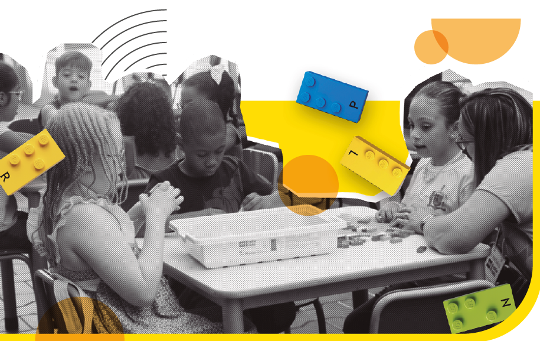
LEGENDA: Foto: clientes participam de atividades com peças LEGO® adaptadas para Braille. FIM DA LEGENDA.
Criado em 2020, o Projeto LEGO Braille Bricks é uma iniciativa inovadora da Fundação Dorina Nowill para Cegos em parceria com a Fundação LEGO da Dinamarca. As peças de LEGO® foram transformadas em um sistema de leitura e escrita em relevo, representando o alfabeto Braille e a respectiva letra em caractere visual (alfabeto comum). É um recurso pedagógico lúdico e inclusivo, utilizado no processo de pré-alfabetização e alfabetização de crianças com e sem deficiência visual.
O ano de 2024 foi repleto de realizações e experiências de sucesso dentro do programa. Para começar, tivemos o maior número de inscritos de todas as edições e ampliamos o alcance do programa, atendendo um total de 18 universidades.
Os representantes da Fundação LEGO estiveram no Brasil para conhecer casos de sucesso com o LEGO® Braille Bricks em escolas de São José do Rio Preto e Parelheiros (SP), onde foram realizados treinamentos com práticas pedagógicas com o LEGO® Braille Bricks ministrado pelos consultores Marc Angelier e Marie Oddoux.
25
Além disso, o conceito LEGO® Braille Bricks foi apresentado para mais de 400 pessoas, incluindo ministros de todo o mundo, na UNESCO, no evento do 30º aniversário da Declaração da Salamanca.
Em 2024, também foi realizada a segunda edição do Prêmio LEGO Braille Bricks, no qual educadores inscreveram seus projetos de práticas pedagógicas inclusivas. As três finalistas — de Porto Alegre/RS, Valinhos/SP e Joinville/SC — tiveram seus prêmios financiados pelas empresas Faber-Castell, Associação Escandinava e RaniFit Confecções. Outro destaque foi o II Encontro Presencial dos Tutores do Programa, que teve como objetivo aperfeiçoar os conhecimentos sobre a deficiência visual e integrar os tutores com uma oficina pedagógica com o uso do material.
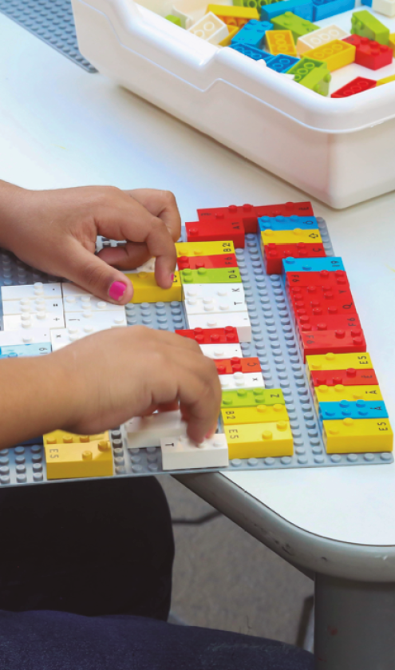
LEGENDA: Foto: Peças LEGO® que auxiliam na educação e no aprendizado da leitura em braille. FIM DA LEGENDA.
Números do LEGO® Braille Bricks

4.435 kits distribuídos

2.301 escolas

29 municípios

3.447 educadores inscritos

36.828 estudantes impactados, sendo 1.188 com deficiência visual
26
![Imagem: Fotomontagem. Fotografia em preto e branco, à esquerda, um menino com cabelos curtos sentado em uma pilha de livros, ele usa óculos escuros, blusa e bermuda estampadas e segura um livro aberto próximo ao rosto. À direita, um homem com cabelos curtos e barba grisalha, usa blusa clara e segura uma bengala longa. Na parte inferior esquerda, um livro aberto com escrita em braile nas páginas. Ao fundo, há uma ilustração de um círculo amarelo e linhas curvas em preto que formam um semicírculo. Fim da imagem.](../resources/images/image_Image13130.png)
LEGENDA: Ilustração: colagem com fotos dos clientes Kauai Mesquita, Marcelo Kawika e de um livro em Braille aberto. FIM DA LEGENDA.
27
3. Soluções em Acessibilidade
28
Comercial
LEGENDA: Foto: homem com fones de ouvido trabalhando em frente ao computador. FIM DA LEGENDA.
O objetivo de Soluções em Acessibilidade é auxiliar o mercado para transformar a sociedade. Para isso, oferece em seu portfólio, de produtos e serviços, materiais acessíveis para capacitar e transformar empresas e a sociedade, tornando-as mais inclusivas, contribuindo também com a Fundação Dorina em diversos âmbitos, incluindo a sustentabilidade financeira.
Os números em 2024 superaram a meta prevista. Esse crescimento é resultado do esforço da equipe e do relacionamento estabelecido com os clientes e parceiros, além das mudanças estruturais realizadas nos estúdios da Fundação em 2023 e da qualidade do serviço prestado pela equipe do Audiovisual. Também fez a diferença a participação em eventos como a Bett Educar, o Web Summit, a Bienal do Livro e a Flip.
As palestras de sensibilização reforçaram a importância da atitude inclusiva e do protagonismo das grandes empresas, trazendo novas oportunidades de negócios, como a consultoria arquitetônica feita para a Nouvet; projetos de soluções acessíveis, como transcrição e laudo de impressão em Braille nas embalagens desenvolvidas para a Unilever; e iniciativas inovadoras, como a aplicação de Braille nas latas de água da Minalba.
Números do Comercial:
Venda Mercado R$ 5.253 MM
Venda Mercado+ PNLD: R$ 5.958 MM
Total de Projetos/OS’s: 707
Total de Orçamentos: 1.362
29
Audiovisual
2024 foi o momento de colher os frutos da grande renovação dos estúdios de audiovisual. Durante o ano, foram quase 300 projetos em execução e mais de 30 mil páginas feitas, ultrapassando a meta prevista.
Na produção de livros do PNLD, por exemplo, houve uma grande demanda do audiovisual para os livros infantis, com solicitações para inclusão de voz, trilha e efeitos sonoros. Outro avanço de 2024 foi a maior participação da equipe da Fundação na fase de roteirização dos materiais de áudio e vídeo, com a presença dos nossos profissionais desde a criação dos produtos audiovisuais, considerando a acessibilidade desde o início. O resultado são produtos melhores, feitos em menos tempo.
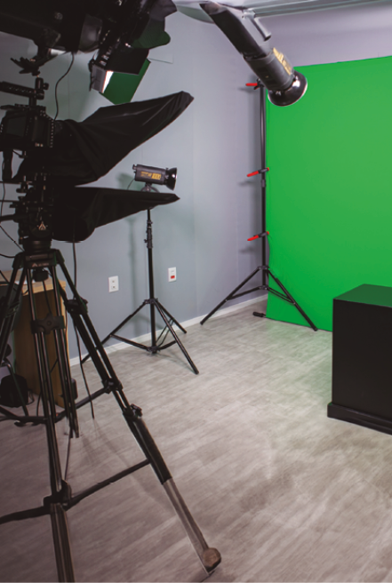
LEGENDA: Foto: estúdio para gravações de vídeo. FIM DA LEGENDA.
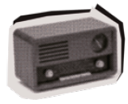
Produções de ÁUDIO
299 projetos com 36.714 páginas
Algumas das empresas atendidas foram: Audible, Bookwire e editoras do PNLD (Globo Livros, Ediouro, Girassol, Ática, Saraiva, Mostarda, Evoluir, FTD Educação)

Produções Internas de VÍDEO
39 vídeos gravados, editados e produzidos
Acessibilidade: audiodescrição, Libras e legenda para surdos e ensurdecidos.
236 vídeos do PNLD para editoras como FTD Educação, Saber e SM.
30
Editorial Braille & Gráfica
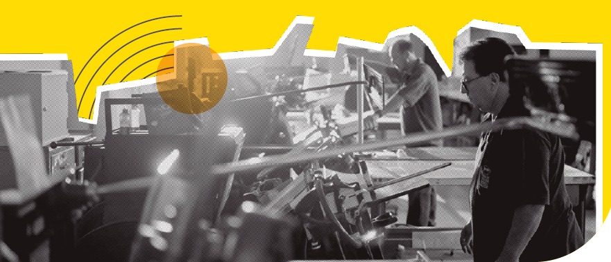
LEGENDA: Foto: funcionários trabalhando na gráfica da Fundação Dorina. FIM DA LEGENDA.
A demanda para o Editorial segue em crescimento constante, o que exigiu o aumento da equipe em 2024. Além disso, a Plataforma Braille, lançada em 2023, continua em constante aperfeiçoamento, consolidando-se como uma ferramenta essencial para acelerar a produção e otimizar processos a médio prazo. Em parceria com a equipe de Inovação, o Editorial Braille trabalha para integrá-la cada vez mais ao fluxo de produção, incorporando tecnologias inovadoras, como a inteligência artificial, para potencializar a acessibilidade dos livros em Braille, um sistema com quase 200 anos de história.
Entre os destaques do ano, clientes como o sistema Etapa e o Grupo Arco Educação começaram a ser atendidos pela Fundação em 2024, além da tradicional produção dos livros do Plano Nacional do Livro Didático (PNLD).
Diferente de 2023, quando foram produzidos os livros do Fundamental I, em 2024 coube ao editorial e à gráfica da Fundação a produção dos livros do Fundamental II, que são livros mais complexos e com mais conteúdos.
31
Em parceria com a Panini, a área produziu o álbum de figurinhas do Brasileirão. Com a experiência adquirida no álbum da Copa, a equipe do Editorial inovou e realizou a produção acessível do álbum, mantendo a mesma estrutura do seu layout original com o auxílio do QR Code para audiodescrição. Assim, produzimos uma tiragem especial com molduras em relevo, permitindo que crianças cegas colem as figurinhas diretamente no álbum.
Como o esporte foi central em 2024, vale destacar dois livros produzidos na gráfica da Fundação: “A magrela que era forte”, sobre a vida de Veronica Hipólito, do Atletismo Paralímpico, publicado pela Editora Girassol; e “Dico, o Menino que Morava no Coração do Pelé”, a biografia do Rei do Futebol, feito pela Editora Garoa. Ambos foram lançados durante a Semana da Leitura, evento organizado pela Fundação Dorina.
O Editorial Digital é a área especializada pela conversão de obras didáticas, literárias e qualquer outro material textual para o formato digital, HTML5 ou ePUB3, garantindo sempre a total acessibilidade destes materiais a pessoas com deficiência visual.
EDITORIAL DIGITAL
Páginas convertidas: 76.940 PÁG.
Títulos acessibilizados: 996

EDITORIAL
Produção Comercial: 63.081 PÁG.
Projetos Internos 9.477 PÁG.
PNLD: 193.466 PÁG.
Total geral de páginas editoradas em 2024: 266.024 PÁG.
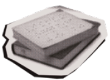
GRÁFICA
Projetos Internos: 2.885.638 PÁG. BRAILLE
PNLD 2023 e 2024: 3.773.691 PÁG. BRAILLE
Produção comercial: 818.430 PÁG. BRAILLE
Total geral de páginas braile produzidas em 2024: 7.477.759 PÁG. BRAILLE
32
![Imagem: Fotomontagem. Fotografia em preto e branco, à esquerda, uma mulher com cabelos longos e ondulados, usa óculos, blusa crópede clara e calça jeans clara. À direita, outra mulher com cabelos presos em um rabo de cavalo, usa blusa clara e segura um livro aberto em uma mão e uma lupa na outra mão. Na parte inferior direita, há um nóti-buki aberto exibindo uma página colorida na tela. Ao fundo, há uma ilustração de um círculo amarelo e linhas curvas em preto que formam um semicírculo. Fim da imagem.](../resources/images/image_Image13239.png)
LEGENDA: Ilustração: colagem com fotos das clientes Sophia Cristina e Beatriz Melo, e imagem de um notebook com o site da Fundação. FIM DA LEGENDA.
33
4. Áreas Administrativas
34
Voluntariado
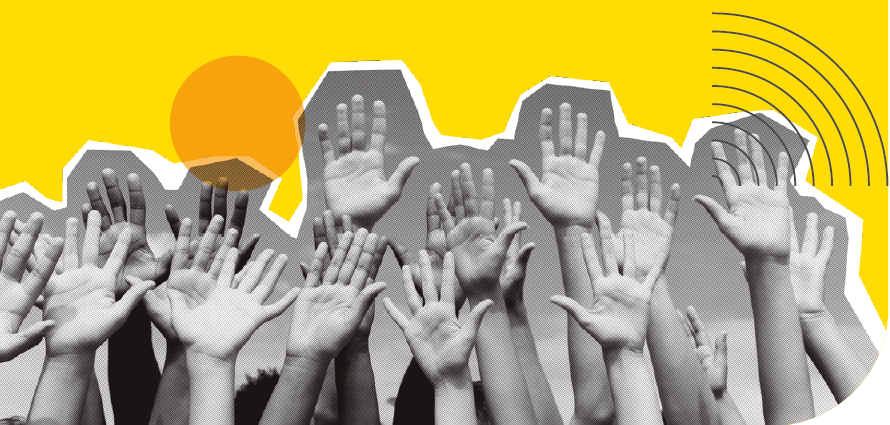
LEGENDA: Foto: diversas mãos estendidas em gesto de colaboração e união. FIM DA LEGENDA.
Com 148 voluntários atuantes, a Fundação conta com esses profissionais nas mais diversas áreas, desde a revisão editorial até o financeiro. Para conscientizar ainda mais pessoas para a importância do voluntariado, em 2024, a Fundação fez 18 ações corporativas, impactando 630 pessoas.
Entre as principais ações dessa área em 2024, estão:
FEIRA ESCANDINAVA
O tradicional grupo de voluntárias do ateliê de artesanato, que foi fundado ainda na gestão da própria Dorina Nowill, participou da Feira Escandinava, no Clube Pinheiros, com a venda de diversos produtos artesanais. Toda a renda arrecadada no evento, a maior dos últimos anos, foi revertida para a Fundação.
TELECINE
Ação de Natal com 50 crianças atendidas pela Fundação, que assistiram o filme “Dois é Demais em Orlando” com audiodescrição. Além da sessão de cinema, a empresa presenteou as crianças e os seus acompanhantes com “guloseimas” e produtos institucionais da marca.
35
ORACLE
Apoio e patrocínio na realização da Festa Junina para os clientes e colaboradores da Fundação, em dois momentos: oficinas de arte e montagem da decoração junina, e atuação no evento, com todas as atrações totalmente acessíveis.
L’OCCITANE EN PROVENCE E BRASIL
No ano de paralimpíada, a empresa fez a doação de uniformes e acessórios para a atividade de Takkyu Volley. Os voluntários participaram da atividade prática com os clientes da Fundação, utilizando o uniforme e os recursos de apoio para a prática esportiva, doados pela L’Occitane.
MARCOS COSTA | MAQUIADOR OFICIAL NATURA DO BRASIL
Com o projeto “Maquiagem para Todas e Todos”, o beauty artist oferece oficinas gratuitas de automaquiagem para pessoas cegas e com baixa visão.
MASTERCARD
Ação de engajamento voluntário com colaboradores das áreas de marketing, estratégia, novos negócios e produtos, com objetivo de sensibilizá-los à experiência de compra de clientes cegos e com baixa visão. A ação contemplou uma gincana interna na MasterCard para a captação de produtos como vestuários, acessórios, eletrônicos e etc. em bom estado, para venda em nosso outlet. Os voluntários montaram uma loja adaptada no auditório da Fundação e a equipe de atendimento e da loja capacitaram os voluntários para o atendimento aos clientes da reabilitação, convidados para participar da experiência de compra.
ONCB ENCONTRO NACIONAL AGORINHA
O Agorinha é um evento de capacitação que tem como foco a ampliação das perspectivas de trabalho e emprego para jovens cegos e com baixa visão. Cerca de 100 pessoas com deficiência visual participaram do Agorinha. Durante 4 dias, os voluntários apoiaram o evento desde a organização, recepção, translado, adaptação às acomodações no Centro Paralímpico, e até o acolhimento durante o fórum e as palestras.
36
Recursos Humanos
LEGENDA: Foto: iconografia de pessoas sob uma mão, representando proteção e cuidado. FIM DA LEGENDA.
Sempre em busca de melhorar a cultura organizacional da instituição e a qualidade de vida dos colaboradores, a área de RH implementou diversas ações em 2024:
Redução da jornada de trabalho dos profissionais do período integral para 200h/mês, o que promoveu um aumento indireto no salário e mais tempo para o colaborador se dedicar à sua vida pessoal.
Adoção da licença-paternidade estendida de 5, que é o prevê a lei, para 15 dias.
Implantação do sistema online de Gestão de Pessoas, que permite controle do ponto on time, controle de férias, acompanhamento de atestados, acesso ao recibo de pagamento e atualização de dados cadastrais.
Aumento do valor do vale-refeição, acima do ofertado pela convenção coletiva, para trazer melhor qualidade na alimentação dos nossos colaboradores.
Início do processo Gestão de Cargos e Salários, começando pela análise de mercado e estrutura de cargos, que serão a base para a criação de um plano de desenvolvimento e crescimento dos profissionais da Fundação.
37
Captação de Recursos
A área de Mobilização e Captação de Recursos é essencial para o funcionamento e a manutenção da instituição. A equipe trabalha de forma dedicada e contínua para ampliar as doações de pessoas físicas e jurídicas, além de buscar alternativas para novas frentes de arrecadação.
Em 2024, foi reforçado o relacionamento com nossos mantenedores, finalizando o ano com 11.941 doadores ativos. Além da mala direta recorrente, realizamos três campanhas extras: em março, para comemorar o aniversário da Fundação Dorina; em julho, para viabilizar a aquisição de Linhas Braille; e em dezembro, na ação de Natal.
2024 foi o ano em que houve a maior captação na campanha de doação de pessoas físicas em Imposto de Renda, com a contribuição de mais de 80 pessoas, que somaram cerca de R$ 112.000,00.
Já para pessoas jurídicas, muitas parcerias com empresas foram reforçadas, tanto em projetos de Leis de Incentivo, quanto em patrocínio de projetos diretos. A Fundação manteve a captação por meio de projetos e leis como FUMCAD, CONDECA, PROAC e Lei Rouanet, para garantir o atendimento de milhares de pessoas com deficiência visual. Foram mais de 30 empresas parceiras que viabilizaram a captação de R$ 4.274.566,76.
Veja os nossos números:
11.941 doadores ativos
R$ 112.000,00 em contribuição de pessoa física (IR)
R$ 4.274.566,76 em contribuição de empresas parceiras
R$ 428.071,07 provenientes da Nota Fiscal Paulista (NFP)
R$ 257.007,11 das vendas no Outlet.

LEGENDA: Foto: pote com moedas e, no centro, um elemento decorativo em formato de coração. FIM DA LEGENDA.
38
Empresas Parceiras
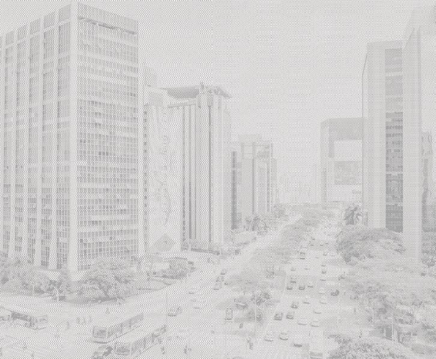
PARCEIROS DE VISÃO
Saiba quais foram as empresas que fizeram parte das conquistas e avanços da Fundação Dorina, por meio de patrocínios aos projetos e outras contribuições e doações:
39
DIAMANTE


PRATA
BRONZE
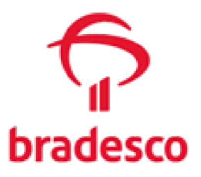
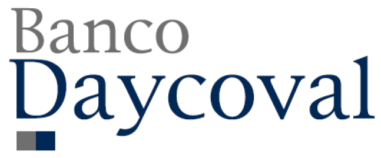
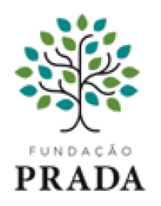
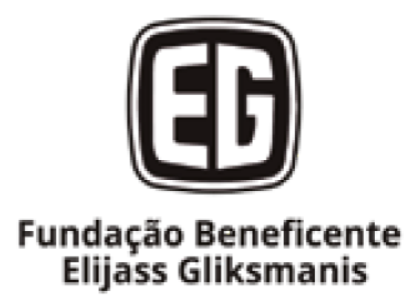
COBRE
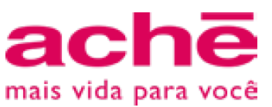
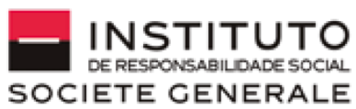
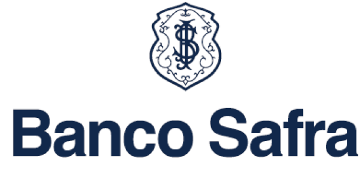


PARCEIROS INSTITUCIONAIS
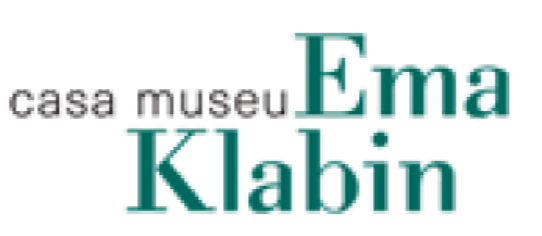

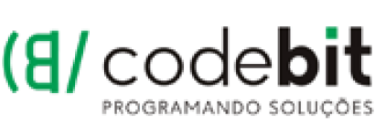
40
Nota Fiscal Paulista
Outra frente significativa de mobilização de recursos para a Fundação é a doação de Notas Fiscais Paulista (NFP). Estabelecimentos parceiros cedem espaço para a instalação de urnas, fomentando a doação das notas sem CPF, já que os consumidores podem depositá-las em benefício à causa da inclusão.
Em 2024, houve um incentivo para a possibilidade de cadastramento automático para a doação das NFP, ampliando ainda mais o valor de conversão e, consequentemente, o impacto positivo para as pessoas cegas e com baixa visão.
LEGENDA: Foto: pessoa segurando uma nota fiscal. FIM DA LEGENDA.
A Fundação atua diretamente com mais de 200 estabelecimentos e também conta com o trabalho voluntário de 30 pessoas para a digitação de mais de 1.342.776 notas.
Outlet
LEGENDA: Foto: sacolas com o logo da Fundação Dorina. FIM DA LEGENDA.
O ano de 2024 foi muito significativo para o Dona Dorina Outlet: além de apresentar a maior arrecadação dos últimos quatro anos, fruto de um trabalho de prospecção e captação vitoriosa de novos parceiros, também representou o encerramento de suas atividades.
Com o fechamento das atividades diárias, a previsão para o próximo ano é de que sejam realizados bazares sazonais, em datas comemorativas.
41
Comunicação & Marketing
A área de Comunicação e Marketing da Fundação Dorina tem como missão divulgar a Fundação à sociedade, conscientizando sobre a causa da pessoa cega e com baixa visão e a importância da prevenção, autonomia, inclusão e acessibilidade. Além disso, reforçar o pioneirismo da fundadora Dorina de Gouvêa Nowill.
2024 foi um ano de grandes conquistas! Entre diversos momentos marcantes, os destaques foram:
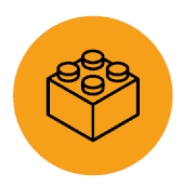
Visita da LEGO Foundation: diretamente da Dinamarca, os representantes da LEGO Foundation conheceram de perto todo o trabalho realizado pela Fundação Dorina com o projeto LEGO Braille Bricks no Brasil. Foi uma programação intensa, com visitas a escolas públicas para conferirem como o material funciona na rotina dos alunos, treinamentos com educadores para reforçar as formas de uso do material, além de rodas de conversa com universidades parceiras da Fundação nesse projeto e pessoas atendidas pela Fundação que utilizaram esse recurso em seu processo de reabilitação.
Lançamento da Fundação Dorina Esporte: lançamento da Fundação Dorina no esporte inclusivo, com o apoio às equipes da Naurú, voltada ao atletismo, e do CADEVI, dedicada ao goalball. O anúncio foi feito em evento no Centro de Treinamento Paralímpico Brasileiro, em São Paulo, marcando um momento importante em nossa jornada rumo à igualdade no esporte.
“PEGA ESSA VISÃO”, campanha de prevenção e combate à cegueira em referência ao Abril Marrom: foi realizada uma ação com diversas atividades na Av. Paulista, em parceria com a ComSaúde da FIESP e do CIESP, além da iluminação do tradicional prédio da FIESP com o laço marrom da campanha e a cor amarela, representando a Fundação Dorina. Além disso, houve mensagens nos chamados Painéis de Mensagens Variáveis (PMVs), localizados em rodovias sob concessão da Arteris; entrada em campo de crianças atendidas pela Fundação, junto aos jogadores de futebol, em dois clássicos do Brasileirão, em parceria com a CBF, e audiodescrição para acompanharem a partida.
42
Cobertura dos Jogos Paralímpicos 2024 em Paris: a Fundação Dorina foi representada pelo fotógrafo cego João Maia, ex-cliente e conselheiro da Fundação Dorina, o presidente do Conselho de Curadores, Francisco Henrique Della Manna, além dos profissionais do projeto ‘4 Sentidos 1 Visão’ e do Guia do Deficiente. A equipe realizou a narração direta por meio da web rádio TOP News, com apoio do CADEVI. Durante todo o período do evento, as fotos e as notícias foram disponibilizadas no site da Fundação, na página especial “Dorina Informa: Especial Jogos Paralímpicos Paris 2024”, em mais um passo significativo na missão de promover a igualdade e o acesso à cultura e ao esporte para todos.
Exposição “Fotografia Cega”: realizada pela Fundação Dorina Nowill para Cegos, reuniu fotografias de paratletas captadas pelo fotógrafo cego João Maia nas Paralimpíadas de Tóquio. O tema foi escolhido em paralelo ao período dos Jogos Paralímpicos 2024, em Paris. A mostra, apresentada no Clube Paulistano, Clube Monte Líbano e Unibes Cultural, contou com recursos de acessibilidade — legendas com fonte ampliada, braille e audiodescrição, além da descrição sonora de todas as obras.
Participação nas feiras Bett Educar e Bienal do Livro: a Fundação esteve presente em duas feiras de grande relevância com a temática de materiais acessíveis, reforçando o compromisso com a inclusão e a acessibilidade. Com a primeira participação oficial na Bett Educar, foi possível falar sobre a marca e suas soluções no estande, por meio da identidade visual criada e as atividades programadas. Na Bienal do Livro de São Paulo, marcamos presença com a parceira Editora Mostarda, em um estande que se destacou pelos recursos de acessibilidade, além de ampliar significativamente a visibilidade da marca.
II Prêmio LEGO Braille Bricks: evento que premiou os projetos inclusivos de educadores mais inovadores utilizando o LEGO® Braille Bricks.
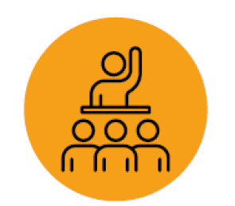
Reunião do Consórcio Daisy no Brasil: a Fundação Dorina sediou a reunião oficial do Consórcio Daisy no Brasil. Esse importante encontro internacional reuniu o Conselho do Consórcio para discutir temas relevantes sobre acessibilidade. O evento contou também com a presença de observadores convidados que acompanharam todas as discussões como ouvintes.
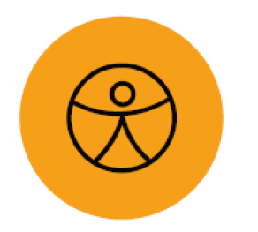
Conferência Internacional de Acessibilidade: o evento, aberto ao público, reuniu especialistas internacionais e membros do Consórcio Daisy para discutir temas essenciais sobre acessibilidade no mercado editorial, trazendo diferentes perspectivas e realidades globais.
43
Gestão Executiva Administrativa & Financeira
O planejamento estratégico da Fundação Dorina, que começou a ser implementado no início de 2022, fechou o primeiro triênio no fim de 2024, com várias metas alcançadas.
Com relação aos processos internos, foram feitos:
• Revisão do Código de Ética e conduta e da Política Anticorrupção;
• Criação das Políticas de: Canal de Denúncia; Brindes, Presentes e Hospitalidade; Doações; Conflito de Interesses e Medidas Disciplinares;
• Divulgação das Pílulas de Integridade Divulgadas;
• Treinamento sobre o Código de Ética e Conduta;
• Background Checks de Fornecedores;
• Avaliação de Riscos Corporativos;
• Elaboração do Mapa de Riscos e de Materialidade e Diagnóstico;
• Definição dos Objetivos do Desenvolvimento Sustentável (ODS).
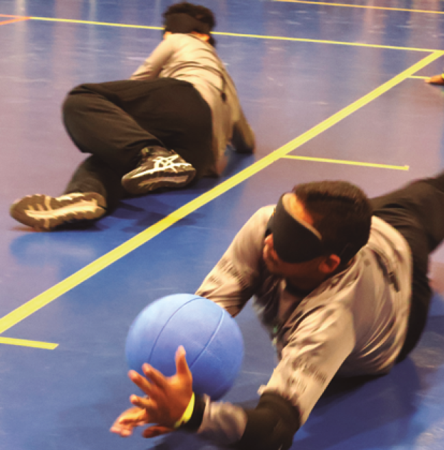
LEGENDA: Foto: atletas com deficiência visual em prática esportiva. FIM DA LEGENDA.
No âmbito do impacto social, as ações realizadas no triênio 2022-2024 foram:
• Programa de Habilitação e Reabilitação Remoto - Brasil, expandindo o atendimento da Fundação para além de São Paulo, com parcerias com a ACIC, em Santa Catarina, e com a ISMAC, no Mato Grosso do Sul;
• Formação de novos talentos para as práticas esportivas, por meio das parcerias com a Naurú (Atletismo) e com a CADEVI (Goalball);
• Programas de Educação Profissional, com a criação de diversos cursos EAD abertos ao público em geral;
• Disciplinas complementares ao atendimento, com novas atividades oferecidas aos clientes;
• Marketing estratégico;
• Representação ativa junto aos órgãos públicos;
• Revitalização da Estrutura do Núcleo Audiovisual, com a reforma do estúdio;
• Parcerias estratégicas com editoras.
44
Gestão de Projetos
A área é responsável por elaborar e gerenciar a execução dos projetos da organização. Em 2024, a carteira de projetos contou com 45 iniciativas, em diferentes etapas: alguns estavam em planejamento e elaboração da proposta, outros em fase de captação, outros tinham avançado para a etapa de conveniamento (procedimentos necessários para iniciar o projeto após a captação de recursos), e ainda havia alguns já sendo executados, com acompanhamento contínuo e prestação de contas. Além disso, alguns projetos passaram por todas essas etapas durante o ano de 2024, desde a elaboração da proposta até a prestação de contas.

LEGENDA: Foto: pessoas sentadas em volta de uma mesa com cadernos, notebooks e tablets. FIM DA LEGENDA.
O foco da área de Gestão de Projetos é garantir o acompanhamento adequado de cada projeto, assegurando que sejam realizados conforme os parâmetros estabelecidos, como metas, prazos e orçamentos. Para isso, a Fundação trabalha em parceria com as equipes responsáveis, oferecendo suporte técnico e administrativo para assegurar o sucesso na execução de cada iniciativa.
Os projetos têm um impacto significativo na inclusão de pessoas com deficiência visual e contribuem para a sustentabilidade da organização. Os resultados obtidos serão ilustrados nos gráficos a seguir, que mostrarão o status de cada projeto, os segmentos aos quais pertencem e as fontes de recursos utilizadas: Leis de Incentivo, Fundos de Governo ou Investimento Social Privado.
45
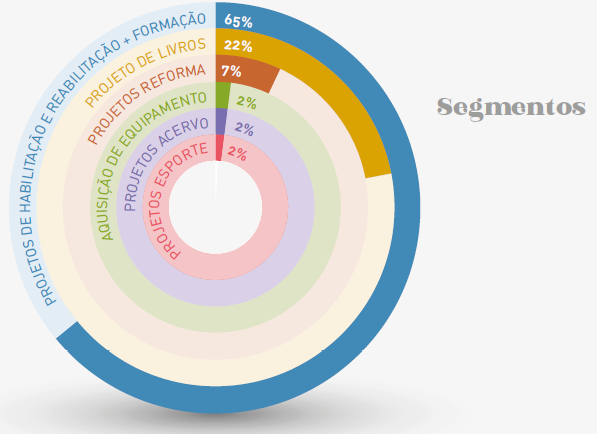
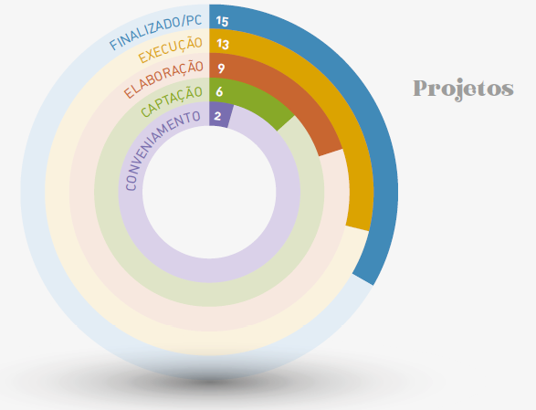
46
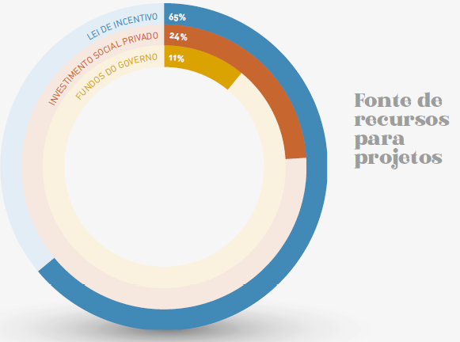
TABELA 1 - Valores Arrecadados
Tabela: equivalente textual a seguir.
| Status | Lei de Incentivo | Fundos de Governo | Patr. Direto | Totais | ||||||
| Hab. Reab. e Formação | Livro | Esporte | Acervo | Hab. Reab. e Formação | Aquisição de Equipamento | Reforma | Hab. Reab. e Formação | Quantidade | Valor Acumulado dos Projetos | |
| Captação | 2 | 2 | 1 | - | - | - | - | 1 | 6 | R$ 7.898.714,01 |
| Execução | 5 | 2 | - | 1 | 2 | - | - | 3 | 13 | R$ 10.922.003,80 |
| Elaboração | - | - | - | - | 1 | 1 | 3 | 4 | 9 | R$ 6.659.695,41 |
| Conveniamento | 2 | - | - | - | - | - | - | - | 2 | R$ 1.488.680,66 |
| Finalizado/PC | 8 | 6 | - | - | 1 | - | - | - | 15 | R$ 13.421.113,53 |
| TOTAIS | 17 | 10 | 1 | 1 | 4 | 1 | 3 | 8 | 45 | R$ 40.390.207,41 |
47
ESG
A cada ação realizada, a Fundação Dorina busca minimizar os seus impactos no meio ambiente, construir um mundo mais justo e responsável e manter os melhores processos de administração, pilares do conceito de ESG (Environmental, Social and Governance).
Em 2024, a consultoria Grant Thornton realizou um amplo diagnóstico para avaliar a maturidade em ESG da Fundação, definida no nível estratégico. O estudo também identificou as oportunidades de melhoria em cada eixo — meio ambiente, negócio, governança e social — que orientam para um crescimento sustentável da Fundação.
Inicial
Ambiental
2 temas e 18 tópicos
• Mudanças Climáticas
• Meio Ambiente
Gestão
Governança
4 temas e 29 tópicos
• Estratégia
• Governança e Gestão
• Transparência e Relatórios
• Gestão de Riscos
Estratégia
Social
6 temas e 46 tópicos
• Responsabilidade Social
• Fornecedores
• Diversidade e Inclusão
• Direitos Humanos
• Saúde e Segurança
• RH
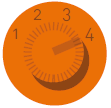
Cultura
Negócios
8 temas e 42 tópicos
• Proposta de Valor
• Código de Conduta
• Compliance
• Canal de Denúncia
• Segurança Cibernética
• Auditoria Interna e SGI
• Engajamento com as partes interessadas
• Compromissos
Outro trabalho realizado pela consultoria foi a definição dos ODSs (Objetivos do Desenvolvimento Sustentável) em que a Fundação contribui por meio de seus projetos e ações.
48
Tecnologia
LEGENDA: Foto: homem trabalhando em frente ao computador. FIM DA LEGENDA.
Os avanços tecnológicos têm sido uma das principais ferramentas de crescimento e desenvolvimento para todas as áreas da Fundação. Em 2024, o destaque foi o desenvolvimento da Plataforma Braille, sistema idealizado pela Fundação, em que várias etapas manuais do processo de transformação de um livro em formato Braille estão sendo automatizadas para aumentar a velocidade, a eficiência e a qualidade da produção de páginas no Editorial e na Gráfica. A plataforma segue em evolução, e o próximo passo é incorporar o uso de uma inteligência artificial construída internamente e treinada com todo o know-how dos quase 80 anos da Fundação Dorina, para a otimização da produção de descrição de imagens.
Para apresentar essa ferramenta aos stakeholders, a equipe de TI da Fundação não só participou de eventos relevantes para o setor, como organizou encontros para mostrar o trabalho que vem realizando. Em 2024, um dos dois Encontros Internacionais de Acessibilidade foi sediado na Fundação. Durante o evento, que reuniu o board do Daisy e diversos players institucionais e governamentais importantes do universo editorial e educacional brasileiro, a Plataforma Braille foi apresentada aos participantes. O mesmo aconteceu durante o Web Summit, onde a Fundação teve um espaço para falar sobre acessibilidade e inteligência artificial, resultando em parcerias e novos negócios.
49
Advocacy
No ano de 2024, a área de Advocacy participou de vários eventos e proposições importantes para os conselhos dos quais faz parte:
1. Conselho Municipal de Assistência Social de São Paulo (COMAS-SP)
A Fundação Dorina, representada pelo Advocacy Marcelo Panico, foi eleita para a presidência do COMAS-SP no segmento de entidades de assistência social, resguardando a defesa e efetivação de direitos socioassistenciais.
Dessa forma, participamos ativamente da construção das seguintes resoluções:
Resolução COMAS 2118/2023: otimiza e automatiza os processos de inscrição de entidades no COMAS-SP. Dessa forma, as entidades que desejam se inscrever no COMAS-SP, podem solicitar através do Portal 156, da Prefeitura de São Paulo, de maneira a tornar o processo mais intuitivo, transparente e veloz.
Resolução COMAS 2016/2023: sistematização do acesso às emendas parlamentares pelas entidades socioassistenciais. Com a aprovação dessa Resolução, foi possível a liberação de mais de 10 milhões de reais em emendas parlamentares para as organizações sociais que atuam na cidade de São Paulo.
Resolução COMAS 2077/2023: dispõe sobre a ratificação da proposta de portaria da Secretaria Municipal de Assistência e Desenvolvimento Social (SMADS), que tipifica os serviços socioassistenciais no município de São Paulo, possibilitando uma atualização nos serviços, projetos e programas oferecidos na área de assistência e desenvolvimento social no município.
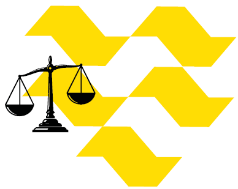
50
2. Conselho Municipal dos Direitos da Criança e do Adolescente de São Paulo (CMDCA/SP)
Na coordenação da CPFO (Comissão Permanente de Financiamento e Orçamento), lideramos a aprovação da Resolução CMDCA nº 155/2024, que garante o uso maior da margem de segurança do CMDCA. Anteriormente, a margem reservava 20% do fundo para gastos emergenciais e, agora, reserva apenas 10%. Com isso, as entidades podem utilizar mais recursos para projetos.
Com essa medida, o CMDCA/SP tornou público o Edital Temático de Chamamento do Fundo Municipal dos Direitos da Criança e do Adolescente (FUMCAD), ainda no ano de 2024, utilizando o saldo dos recursos otimizados pela resolução que reduziu a margem de segurança.
3. Fundo Estadual de Defesa dos Interesses Difusos (FID), vinculado à Secretaria Estadual de Justiça e Cidadania de São Paulo
O FID, com a nossa participação efetiva, analisou, monitorou e fiscalizou cerca de 289 projetos aprovados, liberando mais de 255 milhões de reais para os projetos elegíveis, beneficiando vários municípios e organizações sociais do Estado de São Paulo que conseguiram no ano de 2024 executar e entregar os seus diversos projetos com recursos do Fundo.

51
4. Comissão Permanente de Acessibilidade (CPA) vinculada à Secretaria Municipal dos Direitos das Pessoas com Deficiência de São Paulo
A CPA, que foi criada há mais de 28 anos, se reuniu semanalmente para debater e deliberar demandas diversas relacionadas à acessibilidade na cidade de São Paulo. Com a participação da área de Advocacy da Fundação Dorina, pudemos colaborar com o desempenho em atividades de defesa e efetivação dos direitos socioassistenciais, construção de novos direitos, promoção da cidadania e inclusão social das pessoas com deficiência.
Como exemplo, podemos citar a visita ao Museu do Futebol, no Estádio Paulo Machado de Carvalho – Pacaembu, para verificar os recursos de acessibilidade, e a visita à CASACOR, sediada no Complexo Nacional Eva Herz, no Conjunto Nacional, na Avenida Paulista, impactando milhares de pessoas, em especial engenheiros e arquitetos. Foi feita também uma visita ao Solar da Marquesa, no Centro Histórico de São Paulo, para participar de uma reunião de formação de profissionais que trabalham nos diversos museus da cidade, visando à promoção da acessibilidade, à concessão de diversos selos de acessibilidade arquitetônica e comunicacional, dentre outras atividades.
52
5. DISABILITY 20 (D20) – G20
O advocacy da Fundação foi convidado pelo Instituto Jô Clemente (IJC) para ser coordenador do grupo de trabalho 2 (Sistemas Alimentares, Combate à Fome e Pobreza).
O grupo se organizou para formular recomendações ao G20, com foco nas pessoas com deficiência em todo o mundo. Com as recomendações concluídas, Marcelo representou a Fundação no G20, no Rio de Janeiro, onde também discursou sobre sua experiência na coordenação dos trabalhos do grupo. As recomendações foram formalmente entregues aos líderes mundiais.

53
6. Conselho Gestor da Área de Intervenção Urbana do Setor Central da cidade de São Paulo (AIU-SCE)
Em 2024, o advocacy da Fundação foi indicado para representar o segmento de assistência social na AIU-SCE. Esse Conselho planeja a reforma e a revitalização de área do centro de São Paulo, com a desapropriação de imóveis subutilizados, a construção de calçadões mistos e a preservação do patrimônio cultural. Isso pode aumentar o desenvolvimento comercial e habitacional do Centro, e a participação da Fundação contribui de forma efetiva para o controle social e para a ampliação dos espaços de participação democrática no Sistema Único de Assistência Social (SUAS) e nas demais políticas públicas.

54
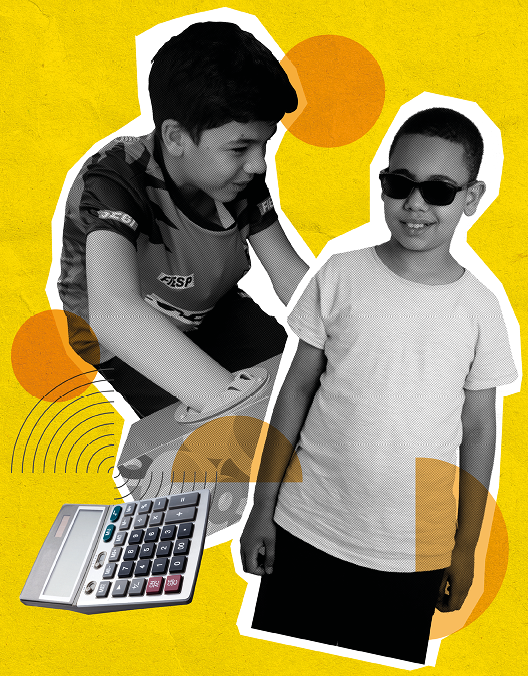
LEGENDA: Ilustração: colagem com fotos dos clientes, Otávio Tigre e Isaque Balbino, e uma calculadora. FIM DA LEGENDA.
55
5. Indicadores Financeiros
56
Fonte de Recursos
2024
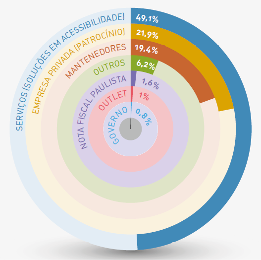
57
Aplicação de Recursos
2024
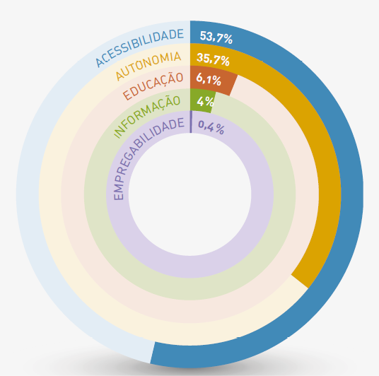
58
Demonstrações Contábeis
Em 31 de dezembro de 2024 e 2023
(Valores expressos em reais)
Balanço patrimonial findo em 31 de dezembro de 2024 e 2023
Tabela: equivalente textual a seguir.
| Notas Explicativas | 2024 | 2023 | |
| Circulante | |||
| Caixa e equivalentes de caixas Recursos próprios | 5(a) | 21.578.755 | 13.532.125 |
| Caixa e equivalentes de caixas Recursos restritos | 5(b) | 4.112.750 | 4.863.021 |
| Clientes | 6 | 809.459 | 952.202 |
| Estoques | 7 | 143.374 | 1.164.683 |
| Despesas antecipadas | 8 | 20.424 | 12.036 |
| Outros créditos | 9 | 1.126.556 | 35.178 |
| 27.791.318 | 20.559.245 | ||
| Não circulante | |||
| Títulos e valores Mobiliários | 10 | 148.902.663 | 153.575.833 |
| Depósitos judiciais | 13 | 32.465 | 74.550 |
| Outros créditos | 9 | - | 193.376 |
| 148.935.128 | 153.843.759 | ||
| Imobilizado e intangíveis | |||
| Imobilizado | 11 | 6.563.636 | 4.171.842 |
| Intangível | 12 | 949.708 | 820.288 |
| Bens em comodato | - | 29.120 | 29.120 |
| 7.542.464 | 5.021.250 | ||
| Total do ativo | 184.268.910 | 179.424.254 | |
Observação: As notas explicativas são parte integrante das demonstrações contábeis. Fim da observação.
59
Balanço patrimonial findo em 31 de dezembro de 2024 e 2023
Tabela: equivalente textual a seguir.
| Notas Explicativas | 2024 | 2023 | |
| Circulante | |||
| Fornecedores | - | 413.165 | 374.435 |
| Salários e encargos sociais | - | 421.970 | 407.209 |
| Provisões de férias e encargos | 4(h) | 760.922 | 691.413 |
| Convênios, subvenções e leis de incentivo a realizar | 16 | 4.112.682 | 4.863.021 |
| Projetos próprios a realizar | 17 | 1.071.076 | 880.896 |
| 6.779.815 | 7.216.974 | ||
| Não circulante | |||
| Provisão para demandas judiciais | 13 | 1.246.181 | 2.144.108 |
| Bens em comodato | - | 29.120 | 29.120 |
| 1.275.301 | 2.173.228 | ||
| Patrimônio líquido | |||
| Patrimônio Social | 14 | 170.034.052 | 138.086.296 |
| Superávit/(Déficit) do exercício | 15 | 6.179.742 | 31.947.756 |
| 176.213.794 | 170.034.052 | ||
| Total do passivo e patrimônio líquido | 184.268.910 | 179.424.254 | |
Observação: As notas explicativas são parte integrante das demonstrações contábeis. Fim da observação.
60
Demonstrações dos resultados dos exercícios findos em 31 de dezembro de 2024 e 2023
Tabela: equivalente textual a seguir.
| Receitas operacionais | Notas Explicativas | 2024 | 2023 |
| Com restrição | |||
| Lei Rouanet, Proac e Convênios | 16 | 3.991.762 | 4.799.201 |
| Projetos patrocinados | 17 | 911.525 | 1.053.363 |
| 4.903.287 | 5.852.564 | ||
| Sem restrição | |||
| Doações e campanhas | 18 | 5.287.443 | 7.072.004 |
| Venda de bens e serviços | 20 | 6.411.200 | 8.765.279 |
| Outras receitas | 19 | 915.134 | 116.916 |
| 12.613.777 | 15.954.199 | ||
| Gratuidades | |||
| Trabalho voluntário | 22 | 505.303 | 446.571 |
| Gratuidades recebidas | 23 | 3.181.547 | 1.721.320 |
| 3.686.850 | 2.167.891 | ||
| Total das receitas | 21.203.914 | 23.974.654 | |
Observação: As notas explicativas são parte integrante das demonstrações contábeis. Fim da observação.
61
Demonstrações dos resultados dos exercícios findos em 31 de dezembro de 2024 e 2023
Tabela: equivalente textual a seguir.
| Despesas operacionais | Notas Explicativas | 2024 | 2023 |
| Com restrição | |||
| Execução de convênios | 16 | (3.991.762) | (4.799.201) |
| Desp. com projetos patrocinados | 17 | (911.525) | (1.053.363) |
| (4.903.287) | (5.852.564) | ||
| Sem restrição | |||
| Pessoal, encargos e benefícios | 26a | (7.518.665) | (6.924.729) |
| Despesas administrativas | 26b | (5.435.420) | (5.316.892) |
| Projetos Institucionais | - | (249.008) | - |
| Contrapartida de uso de imóvel | 25 | (296.092) | (86.102) |
| Depreciação e amortização | 11 e 12 | (1.167.079) | (1.320.889) |
| (14.666.264) | (13.648.612) | ||
| Serviços gratuitos | |||
| Trabalho voluntário | 22 | (505.303) | (446.571) |
| Contrapartida gratuidades recebidas | 23 | (3.181.547) | (1.721.320) |
| (3.686.850) | (2.167.891) | ||
| Total das despesas | (23.256.401) | (21.669.067) | |
| Superávit/(Déficit) operacional | 2.052.487 | 2.305.587 | |
| Receitas não operacionais Outras receitas não operacionais | 19 | - | 152.042 |
| Superávit/(Déficit) antes do resultado financeiro | (2.052.487) | 2.457.629 | |
| Resultado financeiro | 27 | 8.232.229 | 29.490.126 |
| Superávit/(Déficit) do exercício | 6.179.742 | 31.947.756 | |
| Isenções e renúncia fiscal | 21 | 5.150.564 | 13.739.046 |
| Cota Patronal Previdenciária | - | (2.345.359) | (2.094.857) |
| Pis s/ Fopag | - | (91.975) | (82.151) |
| IRPF | - | (1.520.936) | (7.962.939) |
| CSLL | - | (556.177) | (2.875.298) |
| COFINS | - | (636.117) | (723.801) |
| Superávit/(Déficit) do exercício | - | 6.179.742 | 31.947.756 |
Observação: As notas explicativas são parte integrante das demonstrações contábeis. Fim da observação.
62
Relatório do Auditor Independente sobre as Demonstrações Contábeis
Aos Conselheiros da Fundação Dorina Nowill Para Cegos
São Paulo – SP
Opinião
Examinamos as Demonstrações contábeis da Fundação Dorina Nowill Para Cegos (“Entidade”), que compreendem o balanço patrimonial em 31 de dezembro de 2024 e as respectivas demonstrações do resultado, das mutações do patrimônio líquido e dos fluxos de caixa para o exercício findo nessa data, bem como as correspondentes notas explicativas, compreendendo as políticas contábeis significativas e outras informações elucidativas.
Em nossa opinião, as Demonstrações contábeis acima referidas apresentam adequadamente, em todos os aspectos relevantes, a posição patrimonial e financeira da Fundação Dorina Nowill Para Cegos em 31 de dezembro de 2024, o desempenho de suas operações e os seus fluxos de caixa para o exercício findo nessa data, de acordo com as práticas contábeis adotadas no Brasil e entidades sem fins lucrativos (ITG 2002).
Base para Opinião
Nossa auditoria foi conduzida de acordo com as normas brasileiras e internacionais de auditoria. Nossas responsabilidades, em conformidade com tais normas, estão descritas na seção a seguir intitulada “Responsabilidade do auditor pela auditoria das demonstrações contábeis”. Somos independentes em relação à Entidade, de acordo com os princípios éticos relevantes previstos no Código de Ética Profissional do Contador e nas normas profissionais emitidas pelo Conselho Federal de Contabilidade, e cumprimos com as demais responsabilidades éticas de acordo com essas normas. Acreditamos que a evidência de auditoria obtida é suficiente e apropriada para fundamentar nossa opinião.
63
Responsabilidade da Administração e da Governança pelas demonstrações contábeis
A Administração da Entidade é responsável pela elaboração e adequada apresentação das Demonstrações contábeis de acordo com as práticas financeiras adotadas no Brasil e entidades sem fins lucrativos (ITG 2002), e pelos controles internos que ela determinou como necessários para permitir a elaboração de demonstrações contábeis livres de distorção relevante, independentemente se causada por fraude ou erro.
Na elaboração das demonstrações contábeis, a Administração é responsável pela avaliação da capacidade da Entidade continuar operando, divulgando, quando aplicável, os assuntos relacionados com a sua continuidade operacional e o uso dessa base contábil na elaboração das demonstrações contábeis, a não ser que a Administração pretenda liquidar a Entidade ou cessar suas operações ou não tenha nenhuma alternativa realista para evitar o encerramento das operações.
Os responsáveis pela governança da Entidade são aqueles com responsabilidade pela supervisão do processo de elaboração das demonstrações contábeis.
Responsabilidade do auditor pela auditoria das demonstrações contábeis
Nosso objetivo é obter segurança razoável de que as demonstrações contábeis, tomadas em conjunto, estão livres de distorção relevante, independentemente se causada por fraude ou erro, e emitir um relatório de auditoria contendo nossa opinião.
Segurança razoável é um alto nível de segurança, mas não uma garantia de que a auditoria realizada de acordo com as normas brasileiras e internacionais de auditoria sempre detectam as eventuais distorções relevantes existentes. As distorções podem ser decorrentes de fraude ou erro, e são consideradas relevantes quando, individualmente ou em conjunto, possam influenciar, dentro de uma perspectiva razoável, as decisões econômicas dos usuários tomadas com base nas referidas demonstrações contábeis.
Como parte de uma auditoria realizada de acordo com as normas brasileiras e internacionais de auditoria, exercemos julgamento profissional, e mantemos ceticismo profissional ao longo da auditoria. Além disso:
• Identificamos e avaliamos os riscos de distorção relevante nas demonstrações contábeis, independentemente se causada por fraude ou erro, planejamos e executamos procedimentos de auditoria que respondam a esses riscos e obtivemos evidência de auditoria suficiente e apropriada para fornecer uma base para nossa opinião.
64
O risco de não se detectar uma distorção relevante resultante de fraude é maior que aquele de se detectar uma distorção relevante resultante de erro, uma vez que a fraude pode envolver conluio, falsificação, omissões intencionais, falsas declarações ou transgressão dos controles internos.
• Obtivemos entendimento dos controles internos relevantes para a auditoria para planejarmos procedimentos de auditoria que são apropriados nas circunstâncias, mas não para fins de expressar uma opinião sobre a eficácia dos controles internos da Entidade.
• Avaliamos a adequação das políticas financeiras utilizadas e a razoabilidade das estimativas financeiras e das respectivas divulgações feitas pela Administração.
• Concluímos quanto à adequação do uso, pela Entidade, da base contábil de continuidade operacional e, com base na evidência de auditoria obtida, se existe incerteza relevante relacionada com eventos ou condições que podem levantar dúvida significativa quanto à capacidade de continuidade da Entidade. Se concluirmos que existe incerteza relevante, devemos chamar atenção em nosso relatório de auditoria para as respectivas divulgações nas Demonstrações contábeis ou incluir modificação em nossa opinião, se as divulgações forem inadequadas.
Nossas conclusões se baseiam na evidência de auditoria obtida até a data do seu relatório. Contudo, eventos ou condições futuras podem fazer com que a Entidade interrompa a sua continuidade operacional.
• Avaliamos a apresentação geral, a estrutura e o conteúdo das demonstrações contábeis, inclusive as divulgações e se as demonstrações contábeis representam as correspondentes transações e os eventos de maneira compatível com o objetivo de apresentação adequada.
Comunicamo-nos com os responsáveis pela governança a respeito, entre outros aspectos, do alcance planejado, da época da auditoria e das constatações significativas de auditoria, inclusive as eventuais deficiências significativas nos controles internos que identificamos durante nossos trabalhos.
São Paulo, 25 de abril de 2025.
Irko Hirashima
Auditores Independentes
CRC - 2SP020649
Denison Santos Vieira
Contador
CRC -
65
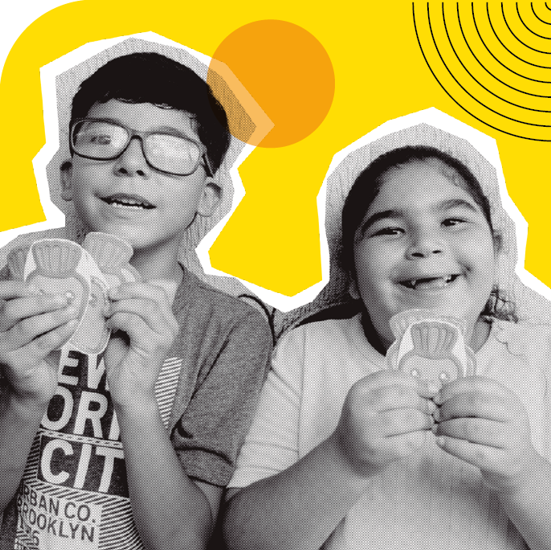
LEGENDA: Foto: clientes Calebe Balbino e Luana Vitória Silva realizando atividade recreativa. FIM DA LEGENDA.
O BALANÇO COMPLETO ESTÁ DISPONÍVEL NO SITE:
66

LEGENDA: Ilustração: colagem com fotos dos clientes Nadir Chuahy e Miguel Lazaro, e uma prancheta com o logo da Fundação. FIM DA LEGENDA.
67
6. Conselho e Gestão
68
Conselho e Gestão
Presidência e Vice-Presidência
Conselho Curador
Francisco Henrique Chimenti Della Manna
Presidente
Roberto Faldini
1º Vice-Presidente
Luiz Felipe Passos Fleury
2º Vice-Presidente
Anne Catherine Olesen
3ª Vice-Presidente
Gestão Executiva
Alexandre dos Santos Oliveira Munck
Superintendente Executivo
Carla De Maria
Gerente de Soluções em Acessibilidade
Kátia Amaral
Controller
Maria das Graças Martins de Oliveira
Gestora Administrativa
Rafael Martins Gonçalves
Gerente de TI, Desenvolvimento e Inovação | D.P.O
Taisa Pelucio
Gerente de Captação de Recursos e Marketing
Conselho de Curadores
Adriana de Magalhães Gouvêa
Adriano Formosinho Correia
Alfredo Weiszflog
Andrea Fonseca França
Antonio Carlos Grandi
Bento Leandro Carneiro
Célia Cristina Monteiro de Barros Whitaker
Cristiano Humberto Nowill
Cristina Faria de Castro Brandão
69
Dulce Arena Avancini
Estela Maria Lemos M. Soares de Camargo
Flavio Bauer
Geraldo Pinheiro da Fonseca Filho
Gustavo Victor de Paula Baptista
Henrique José Fernandes Luz
Irineu da Costa Cruz
Ivonne Franca Olmo
João Batista Maia da Silva
Joaquim Romeu Espinheira Teixeira Ferraz
José Cláudio da Rocha e Silva
Leonardo Barém Leite
Luiz Casimiro de Queiroz
Luiz Henrique Prescendo
Marcio Manoel Nowill
Maria Cristina Godoy Cruz Felippe
Maria do Carmo Novaes Bueno Cury (Tuza Cury)
Martha Vicente de Azevedo Nowill
Moisés Bauer Luiz
Nair Passos Fleury (Ika Fleury)
Regina Carvalho Dias de Gouvêa
Reynaldo Rey Zani
Rodrigo Caldas de Toledo Aguiar
Silvia Saddi Cury
Victor de Oliveira Cosme
Conselho Consultivo
Ana Maria Moraes Velloso
Celso Alves Feitosa
Cristiane Porto Rodrigues da Cunha
Flavio Mendes Bitelman
Hiran Castello Branco
Marcelo Morgado Cintra
Maria Carolina Pinto Coelho Carvalho
Maria Lucia Kerr Cavalcante de Queiroz
Conselho Fiscal
Ana Luiza Salles Lourenço Oliveira
Eduardo de Oliveira (Presidente)
Marcelo José Pires Barbosa
70
Expediente

União de esforços de profissionais de conteúdo, design, revisão e coordenação.
71
Superintendência Executiva
Alexandre Munck
Gerência de Captação de Recursos e Marketing
Taisa Pelucio
Coordenação de Comunicação e Marketing
Carolina Orilio
Produção de Conteúdo
Ariett Gouveia
Revisão
Carolina Orilio
W5 Publicidade
Apoio
Cláudia Piazza Costa
Rodrigo Torres
Thamiris Treigher
Fotografias
Acervo da Fundação Dorina
Antonio Vinícius Lemos
Cecília Furtado
Cléo Acevili
Rodrigo Torres
Projeto Gráfico e Diagramação
W5 Publicidade
72
SIGA A FUNDAÇÃO DORINA NAS REDES SOCIAIS
fundacaodorinanowill
fundacaodorina
fundacaodorina
fundacaodorina
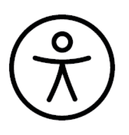
Escaneie o QR Code e tenha acesso à VERSÃO COM ACESSIBILIDADE

Fundação Dorina Nowill para Cegos
Rua Doutor Diogo de Faria, 558
Vila Clementino
CEP: 04037-001
São Paulo/SP - Brasil
fundacaodorina.org.br
+55 (11) 5087-0999 / (11) 5554-0999
***
HTML
Produzido por Fundação Dorina Nowill para Cegos
*
Linearização: Francielle Maria Chies
Descrição de imagens: Letícia Saracini Duarte
Diagramação: Bruno Alves Suniga
Revisão: Marina Vargas O. Angelelli
Supervisão: Marina Vargas O. Angelelli